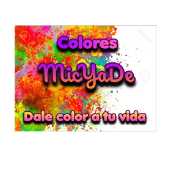
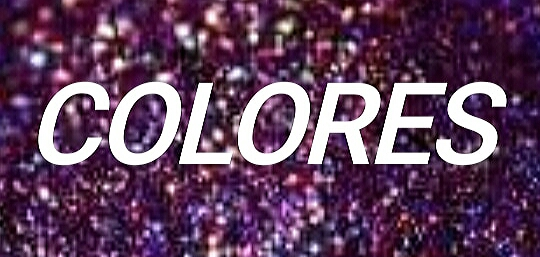
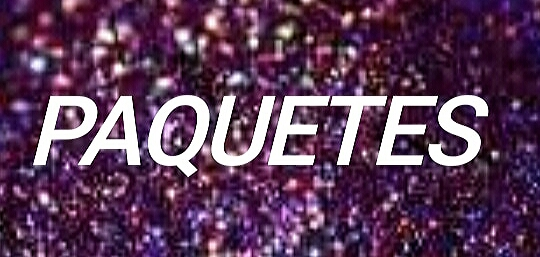
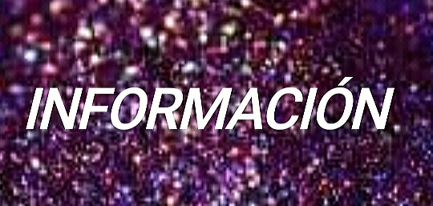

¡Hola Bienvenido a la pagina de Paquetes!!.
-En esta pagina podras encontrar nuestros diferentes
paquetes de colores que tenemos para ti.¿Que es color?El color es la impresion producida por un tono de luz en los organos visuales, o mas exactamente, es una percepcion visual que se genera en el cerebro de los humanos y otros animales al interpretar las señales nerviosas que le envían los fotorreceptores en la retina del ojo, que a su vez interpretan y distinguen las distintas longitudes de onda que captan de la parte visible del espectro electromagnetico.
Propiedades del ColorMatiz, tono o tonalidad: ubica la posición de un color dentro del circulo cromatico, por lo que depende de la o las longitudes de onda. Saturacion, colorido o pureza: depende de la distancia entre determinado color y la escala de grises; con la mayor saturacion un color sera mas vivo, puro o colorido. Brillo, que segun el modelo depende de la luminosidad o el valor: se da de acuerdo a la claridad u oscuridad del color, en donde el minimo valor (cero) corresponde al negro y el maximo depende si se trata del modelo HSL (luminosidad) o HSV (valor), como se ve en la imagen. El grado en que uno o dos de los tres colores primarios RGB (esta clasificación es referente a los colores basicos en la composicion luminosa de u na pantalla informatica R=Red, G=Green, B=Blue, con los que se componen por medio de adicion luminica, distinta a la clasificacion de los colores basicos o primarios de la pintura, en la que se mezclan por adición de pigmentos matericos o físicos) predominan en un color..jpeg)
Encuentra nuestros colores en cualquier tienda departamental
¡Tambien busca nuestros diferentes paquetes que tenemos para ti!
Estamos disponibles para el cliente para darle la mejor atencion e informacion.
¡ Muchas gracias por su compra !Inicio-
Colores-
Paquetes-
Informacion |